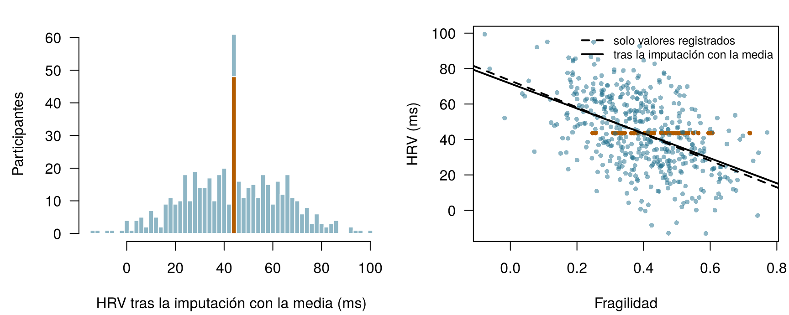
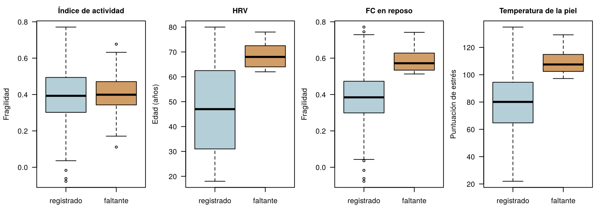
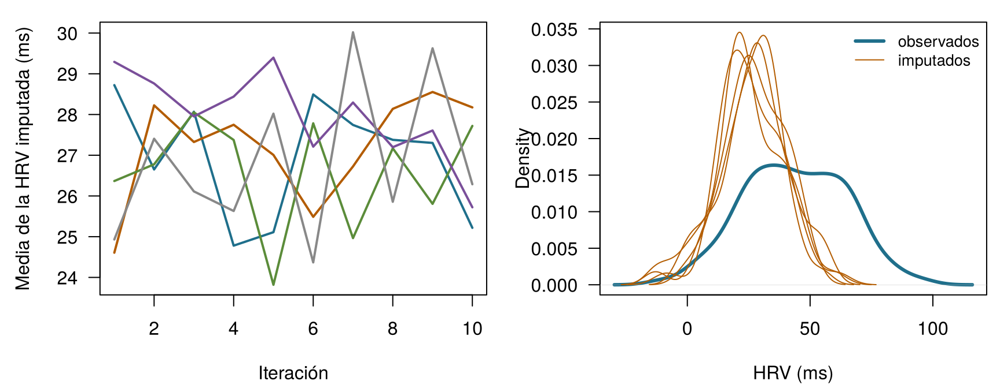
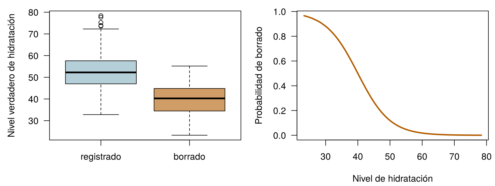

x <- c(10, 12, NA, 16)
mean(x) # R se niega: la respuesta es desconocida[1] NAmean(x, na.rm = TRUE) # la media de los valores que se registraron[1] 12.66667Cuatro preguntas para entrar en calor. Arriesga tu mejor respuesta: todas se responden a lo largo del capítulo.
| Pregunta | Tu respuesta |
|---|---|
| Cuatro lecturas de HRV son 10, 12, (faltante) y 16 ms. ¿Cuál es la media de los valores que se registraron? (escribe un número) | |
| Rellenas cada hueco de una columna con la media de esa columna. La desviación típica de la columna … | |
| La batería del reloj se agota en momentos que no tienen nada que ver con la salud de quien lo lleva. Estos huecos son faltantes … | |
| La imputación múltiple rellena cada hueco con … |
Este capítulo toma prestadas algunas ideas de capítulos anteriores. En una línea cada una:
| Ejemplo | Quién o qué | Desenlace | Caras que vas a conocer |
|---|---|---|---|
| 1 UCI Sala 7 | 1250 pacientes de UCI en 4 hospitales | variación de la creatinina en 48 h (lesión renal aguda si ≥ 0,3 mg/dL) | Aoife (71 años, sepsis, riesgo limítrofe), Tomás (54 años, riesgo bajo), Priya (38 años, riesgo alto); la Dra. Emma Walsh; Seán, el farmacéutico |
| 2 Ensayo ONCO-1 | 1000 pacientes aleatorizados a quimioterapia o no | reducción del tumor (%) | pacientes #0042 y #0917 |
| 3 HomeBeat | 500 personas que llevan un reloj inteligente en casa | puntuación de estrés, evento de deterioro | Lena |
| 4 CellWorks | 420 lotes de producción de una terapia celular | puntuación de potencia | lote CW-118 |
Los cuatro conjuntos de datos son simulados y pueden descargarse en el apéndice de datos. La presentación completa está en la Sección 1.1.
Este capítulo trata de los agujeros de un conjunto de datos: por qué aparecen, qué hacen las correcciones fáciles con tus conclusiones y cómo tratarlos con honestidad. Usa sobre todo HomeBeat (Ejemplo 3) y una versión de la UCI Sala 7 (Ejemplo 1) en la que algunos valores de laboratorio nunca se registraron. Tiene once secciones y un Laboratorio, siete comprobaciones rápidas, tres widgets “Pruébalo”, un desafío y tres misiones de programación en R y Python. Calcula unas dos horas.
| Símbolo | Significado | Sección |
|---|---|---|
| \(R_{ij}\) | indicador de ausencia: 1 si se observó el valor de la característica \(j\) para la instancia \(i\), 0 si falta | Sección 9.1 |
| \(\mathbf{D}\), \(\mathbf{D}_{\text{obs}}\), \(\mathbf{D}_{\text{mis}}\) | la tabla de datos completa, su parte observada, su parte faltante | Sección 9.4 |
| \(M\) | número de imputaciones (conjuntos de datos completados) | Sección 9.7 |
| \(\hat\theta_m\), \(\bar\theta\) | estimación obtenida en el conjunto completado \(m\); estimación combinada | Sección 9.7 |
| \(V_W\), \(V_B\), \(V_T\) | varianza dentro de las imputaciones, varianza entre imputaciones y varianza total | Sección 9.7 |
| \(\delta\) | desplazamiento aplicado a los valores imputados en un análisis de sensibilidad | Sección 9.9 |
La lista completa está en la página de notación.
Los datos faltantes suelen tratarse como una molestia técnica, algo que “simplemente pasa” y que se limpia antes de que empiece el análisis de verdad. Sus consecuencias van mucho más allá, y basta el estadístico más sencillo de todos para mostrar por qué: la media.
Definición 9.1 (Valor faltante e indicador de ausencia) Un valor faltante es un valor que debía registrarse y no se registró: una prueba de laboratorio que nunca se solicitó, una pregunta de un cuestionario que se dejó en blanco, una noche en la que un reloj no registró nada. En R y en pandas aparece como NA o NaN. Para cada celda de una tabla de datos escribimos el indicador de ausencia \(R_{ij} = 1\) si se observó el valor de la característica \(j\) para la instancia \(i\) y \(R_{ij} = 0\) si falta. La tabla de todos los \(R_{ij}\) es el patrón de ausencia (Little y Rubin 2020, cap. 1).
La media muestral de \(n\) valores es
\[ \bar{x} = \frac{1}{n}\sum_{i=1}^{n} x_i = \frac{x_1 + x_2 + \dots + x_n}{n} . \qquad(9.1)\]
La fórmula supone, sin decirlo, que existe cada \(x_i\). Toma cuatro lecturas de HRV, 10, 12, 14 y 16 ms: su media es \((10+12+14+16)/4 = 13\). Ahora supón que la tercera lectura nunca se registró. La fórmula pide \((10 + 12 + {?} + 16)/4\), y no tiene ninguna instrucción para el signo de interrogación.
x <- c(10, 12, NA, 16)
mean(x) # R se niega: la respuesta es desconocida[1] NAmean(x, na.rm = TRUE) # la media de los valores que se registraron[1] 12.66667La negativa de R es honesta. Añadir na.rm = TRUE (“elimina los NA”) da \((10 + 12 + 16)/3 = 12{,}67\), pero fíjate en lo que ha cambiado: se ha descartado un valor, el número de valores ha pasado de cuatro a tres, y el resultado responde a una pregunta distinta: ¿cuál es la media de las lecturas que da la casualidad de que tenemos? Con el indicador \(R_i\) se escribe
\[ \bar{x}_{\text{obs}} = \frac{\sum_{i=1}^{n} R_i\, x_i}{\sum_{i=1}^{n} R_i} , \qquad(9.2)\]
que estima la media de todos solo si las lecturas registradas son una muestra representativa de todas las lecturas. Cuando no lo son (cuando, como con el reloj de Lena, las lecturas bajas son las que desaparecen), \(\bar{x}_{\text{obs}}\) está sesgada, y ninguna cantidad de datos adicionales lo corrige.
Otras correcciones rápidas no salen mejor paradas. Rellenar el hueco con cero da \((10+12+0+16)/4 = 9{,}5\), una media determinada por una elección arbitraria. Rellenarlo con la media de los otros tres devuelve 12,67, pero ahora parece que se apoya en cuatro mediciones cuando solo se hicieron tres. Incluso para una media, por tanto, los datos faltantes hacen que la respuesta quede indefinida sin un supuesto, sea sensible al supuesto elegido y esté sesgada si el supuesto es erróneo. Los modelos de regresión, que combinan muchas variables, están aún más expuestos.
El panel de Lena muestra la media de los valores de HRV que su reloj registró en 30 noches. ¿En qué condición es esta una estimación justa de su HRV media a lo largo de las 30 noches?
Antes de los métodos con fundamento, conviene ver los tres atajos a los que los analistas recurren con más frecuencia. Son populares porque son fáciles y parecen libres de supuestos. No lo son, y los datos de HomeBeat muestran lo que hacen. En la versión de los datos que el equipo del ensayo tiene realmente (homebeat_missing.csv), cuatro señales del dispositivo vestible tienen huecos: la frecuencia cardíaca en reposo (30 faltantes), la HRV (48), la temperatura de la piel (31) y el índice de actividad (45). Como los datos son simulados, también tenemos la versión completa (homebeat.csv) y podemos comparar cada atajo con la verdad, un lujo que ningún estudio real tiene.
Definición 9.2 (Análisis de casos completos y eliminación por pares) El análisis de casos completos (también eliminación por lista, en inglés listwise deletion) conserva solo las filas en las que se observaron todas las variables usadas. La eliminación por pares (pairwise deletion, también análisis de casos disponibles) usa, en cada cálculo, todas las filas en las que se observaron las variables de ese cálculo, de modo que cantidades distintas se apoyan en subconjuntos distintos de filas.
El análisis de casos completos es la opción por defecto de la mayoría de los programas, por lo que a menudo ocurre sin que nadie lo note. 134 de los 500 participantes de HomeBeat (27 %) tienen al menos un hueco, así que un análisis de casos completos de toda la tabla trabaja con 366 personas. Los participantes descartados no son una porción al azar: la HRV media de todos es 42,2 ms, la media de todos los valores de HRV registrados es 43,7 ms y la HRV media de los casos completos es 46,4 ms. Cada paso que nos aleja de “todos” elimina más lecturas bajas.
La eliminación por pares conserva más datos en cada cálculo: la correlación de la HRV con la fragilidad usa 452 participantes, la de la HRV con la frecuencia cardíaca en reposo 427, y la de la fragilidad con la frecuencia cardíaca en reposo 470. Cada correlación describe un grupo de personas ligeramente distinto, así que, juntas, pueden formar una matriz que ningún conjunto de datos único podría producir, lo que hace que los métodos construidos sobre esa matriz (componentes principales, análisis factorial, algunos algoritmos de aprendizaje) fallen o se comporten de forma errática (Little y Rubin 2020).
Definición 9.3 (Imputación e imputación simple) La imputación sustituye cada valor faltante por un valor predicho o extraído a partir de los datos. La imputación simple (o única) rellena cada hueco una sola vez (con cero, la media, la mediana, una predicción de regresión) y después analiza la tabla completada como si se hubiera observado por completo.
La imputación simple con la media hace que una tabla parezca completa, pero a un precio. La Figura 9.1 muestra la HRV después de sustituir cada valor faltante por la media observada. Los 48 participantes rellenados se amontonan en un único valor, la desviación típica baja de 21,0 a 19,9 ms y la correlación entre la HRV y la fragilidad se desplaza hacia cero, de -0,50 a -0,48. El cero es peor: una HRV de 0 ms es fisiológicamente imposible, así que crea un grupo de pacientes extremos falsos. La mediana se comporta como la media: es más robusta frente a los valores atípicos, pero produce el mismo pico y la misma pérdida de dispersión.

Los tres atajos tratan los huecos por convención, y no razonando sobre por qué faltan los valores. La imputación simple tiene un segundo defecto, más sutil: trata una conjetura como una medición, así que todo error estándar que se calcule después es demasiado pequeño (Little y Rubin 2020; Buuren 2018).
Un colega rellena los valores faltantes de HRV con la media y después informa de una correlación entre la HRV y la fragilidad. ¿Cuál es la consecuencia más probable?
Cuenta los huecos. Los datos de HomeBeat con valores faltantes están cargados como hb. Rellena el espacio en blanco con la función que marca cada celda como faltante (TRUE) o presente (FALSE), para que la línea cuente los valores faltantes de cada columna.
La función es is.na(). Aplicada a un data frame, devuelve una tabla de TRUE/FALSE, y colSums() cuenta los TRUE de cada columna.
colSums(is.na(hb))El método es .isna(); después, .sum() cuenta los valores True de cada columna.
hb.isna().sum()Las medias y las correlaciones son solo el principio. Supón que el equipo de HomeBeat quiere saber cómo depende la puntuación de estrés de la fragilidad, la HRV y la frecuencia cardíaca en reposo, y ajusta el modelo lineal del Capítulo 4,
\[ \text{puntuación de estrés} = \beta_0 + \beta_1\,\text{fragilidad} + \beta_2\,\text{HRV} + \beta_3\,\text{FC en reposo} + \varepsilon . \]
La función lm() de R descarta sin avisar a todo participante con un hueco en cualquiera de estas variables, así que el modelo usa 427 de los 500 participantes. La Tabla 9.1 compara ese ajuste de casos completos con el ajuste en los datos completos, que en esta simulación hace el papel de la verdad, y con la imputación con la media y la imputación múltiple, que construiremos más adelante en el capítulo.
| Análisis | n | Fragilidad | HRV | FC en reposo |
|---|---|---|---|---|
| Datos completos (la verdad en esta simulación) | 500 | 11.07 (2.84) | -0.515 (0.026) | 0.679 (0.042) |
| Análisis de casos completos | 427 | 9.41 (3.18) | -0.509 (0.028) | 0.708 (0.047) |
| Imputación con la media | 500 | 16.81 (3.11) | -0.493 (0.027) | 0.749 (0.042) |
| Imputación múltiple (M = 50) | 500 | 11.18 (2.96) | -0.505 (0.027) | 0.691 (0.044) |
El coeficiente de la fragilidad en el análisis de casos completos es 9,41, frente a 11,07 en los datos completos. Es tentador leer esa caída como un sesgo: los participantes más frágiles pierden la frecuencia cardíaca en reposo con más frecuencia, así que, según el argumento, las personas más frágiles quedan infrarrepresentadas y el efecto de la fragilidad se subestima. Es una historia natural. ¿Es cierta?
Mira primero los errores estándar. Una diferencia de 1,65 queda holgadamente dentro de un error estándar (unos 3,2), así que un único conjunto de datos no puede distinguir el sesgo de la mala suerte. Una simulación sí puede. Tomamos los datos completos, borramos valores una y otra vez con exactamente las mismas reglas (HRV faltante con más frecuencia por encima de los 60 años, frecuencia cardíaca en reposo faltante con más frecuencia entre los más frágiles), volvimos a ajustar cada vez el modelo de casos completos y promediamos (Tabla 9.2, escenario A). A lo largo de 200 repeticiones, el coeficiente de la fragilidad de los casos completos tiene una media de 11,02: la verdad, salvo el ruido de la simulación. La caída en nuestro único conjunto de datos fue mala suerte. Lo que el análisis de casos completos costó realmente aquí fue precisión: menos participantes, errores estándar mayores, estimaciones que oscilan más de un borrado al siguiente.
| Escenario | Coeficiente | Verdad | Casos completos | Imputación múltiple |
|---|---|---|---|---|
| A | frailty | 11.07 | 11.02 (1.20) | 11.35 (0.75) |
| A | resting_hr | 0.679 | 0.672 (0.015) | 0.680 (0.012) |
| B | frailty | 11.07 | 11.04 (1.52) | 11.67 (1.22) |
| B | resting_hr | 0.679 | 0.622 (0.027) | 0.695 (0.034) |
La lección es general, y corrige una afirmación que aparece en muchos manuales. En una regresión, el análisis de casos completos es insesgado siempre que la probabilidad de que una fila esté incompleta dependa solo de los predictores del modelo, y no del desenlace, sea cual sea el aspecto del patrón de ausencia (Little y Rubin 2020; White y Carlin 2010; Hughes et al. 2019). En el escenario A, la ausencia depende de la fragilidad, un predictor, y de la edad, que no está en el modelo; como la edad también afecta a la puntuación de estrés, queda un pequeño sesgo (compara la frecuencia cardíaca en reposo con su verdad), pero es minúsculo al lado de la dispersión de un borrado al siguiente. El escenario B es distinto: la HRV falta con más frecuencia cuando la puntuación de estrés es alta, así que las filas que sobreviven están seleccionadas por el desenlace. Ahora el coeficiente de la frecuencia cardíaca en reposo en los casos completos es 0,622, frente a una verdad de 0,679, un desplazamiento de unas 2,1 dispersiones: un sesgo genuino. La imputación múltiple, que usa la puntuación de estrés para rellenar los valores faltantes de HRV, se acerca mucho más, a 0,695.
La imputación con la media es la clara perdedora en la Tabla 9.1: lleva el coeficiente de la fragilidad a 16,81, porque los participantes cuya HRV se sustituyó por la media parecen ahora tener un estrés explicado por la fragilidad. Ignorar los datos faltantes nunca es una elección neutral. Que cause daño o no depende de cómo se perdieron los datos, que es a lo que pasamos ahora.
En una regresión de la puntuación de estrés sobre la fragilidad, la HRV y la frecuencia cardíaca en reposo, la frecuencia cardíaca en reposo falta con más frecuencia en los participantes más frágiles, y por ningún otro motivo. ¿Qué hace el análisis de casos completos con los coeficientes?
Hemos visto que los métodos ingenuos a veces funcionan y a veces fallan. Lo que lo decide es la pregunta de esta sección: ¿por qué se perdieron los valores? En términos estadísticos, el proceso que produce los huecos es también aleatorio y tiene su propia distribución de probabilidad. Escribe \(\mathbf{D}\) para la tabla de datos completa (características y desenlace), divídela en la parte que observamos, \(\mathbf{D}_{\text{obs}}\), y la parte que no, \(\mathbf{D}_{\text{mis}}\), y sea \(R\) el patrón de indicadores de ausencia. El mecanismo de ausencia es la probabilidad del patrón dados los datos, \(P(R \mid \mathbf{D}_{\text{obs}}, \mathbf{D}_{\text{mis}})\). Rubin (1976) distinguió tres casos, que determinan qué análisis siguen siendo válidos (Little y Rubin 2020).
Definición 9.4 (MCAR, MAR y MNAR) Los datos son faltantes completamente al azar (MCAR, del inglés missing completely at random) si la probabilidad de un hueco no depende de nada de los datos, observado o no: \(P(R \mid \mathbf{D}_{\text{obs}}, \mathbf{D}_{\text{mis}}) = P(R)\). Son faltantes al azar (MAR, missing at random) si, una vez que condicionamos a lo observado, la probabilidad ya no depende de los valores no observados: \(P(R \mid \mathbf{D}_{\text{obs}}, \mathbf{D}_{\text{mis}}) = P(R \mid \mathbf{D}_{\text{obs}})\). Son faltantes no al azar (MNAR, missing not at random) si la probabilidad depende de los propios valores no observados, incluso después de condicionar a todo lo observado (Rubin 1976; Little y Rubin 2020, cap. 1).
Los nombres confunden (“faltante al azar” no significa aleatorio en el sentido cotidiano), así que ayuda asociarlos al reloj de Lena.
Los mecanismos determinan lo que cada método puede ofrecer. Con MCAR, el análisis de casos completos es insesgado, aunque desperdicia datos. Con MAR, la media de los valores registrados está en general sesgada (y también lo está una regresión de casos completos si la ausencia depende del desenlace), pero los métodos que modelan los valores faltantes a partir de los observados (imputación múltiple, métodos basados en la verosimilitud) siguen siendo válidos, siempre que las variables que provocan la ausencia estén en el modelo. Con MNAR, ni el borrado ni la imputación estándar eliminan el sesgo, porque la causa de los huecos es algo que nunca vemos; solo podemos explorar cuánto cambiarían las conclusiones con supuestos distintos (Sección 9.9). Ten en cuenta que MAR no implica automáticamente sesgo: si la variable que provoca los huecos no tiene relación con la variable que tiene los huecos, incluso la media ingenua se queda cerca de la verdad. El sesgo necesita los dos vínculos: del factor que provoca los huecos a los huecos, y de ese mismo factor al valor.
Haz fallar el reloj de Lena. Cada punto es la HRV verdadera de un participante de HomeBeat. Elige por qué se pierde la HRV, cuántos valores se pierden y con qué fuerza dependen los huecos de su causa. Se comparan dos medias con la verdad (la media de los 500, que solo una simulación conoce): la media de los valores registrados y la media tras rellenar cada hueco con una predicción de regresión a partir de la edad, la fragilidad y la inflamación basal, todas ellas observadas por completo. Prueba MCAR, luego MAR, luego MNAR. Objetivo: encuentra una configuración en la que incluso el relleno por regresión se aleje de la verdad más de 1 ms.
Línea continua: media verdadera. Discontinua azul: media de los valores registrados. Punteada naranja: media tras el relleno por regresión.
Aparecen tres patrones. Con MCAR, las dos medias rondan la verdad y solo oscilan de un sorteo a otro. Con MAR, la media de los valores registrados está sesgada hacia arriba (los participantes de más edad tienen una HRV más baja y pierden más lecturas), mientras que el relleno por regresión, que conoce la edad de cada participante, da con la verdad. Con MNAR, las dos fallan: la edad, la fragilidad y la inflamación explican parte de la HRV, así que el relleno recupera parte de la diferencia, pero los participantes cuya HRV es baja por razones no registradas siguen ocultos.
De las 9 noches faltantes de Lena, dos se perdieron por una batería agotada y siete por un sueño agitado que impidió que el sensor captara la señal. ¿Cómo clasificarías los dos tipos de hueco?
¿Cuál es el mecanismo más plausible para cada hueco? Supón que las variables mencionadas se registran, salvo que el enunciado diga lo contrario.
El mecanismo es un supuesto sobre el mundo, pero los datos todavía pueden decirnos bastante. Una rutina de diagnóstico estándar tiene tres pasos.
1. ¿Cuánto falta, y dónde? Cuenta los huecos por variable (lo hiciste en la misión) y por fila, y mira qué variables tienden a faltar juntas. En HomeBeat falta el 9,6 % de los valores de HRV y el 9,0 % de los valores de actividad, y el 27 % de los participantes tiene al menos un hueco.
2. ¿Se diferencian los participantes con y sin hueco en lo que sí podemos ver? Compara, para cada variable con huecos, la distribución de las variables observadas por completo entre los dos grupos (Figura 9.3). Los participantes con y sin valor de actividad tienen casi la misma fragilidad (media 0,397 frente a 0,396), como predice MCAR. Los participantes sin HRV tienen más edad (edad media 68,4 frente a 47,3); los que no tienen frecuencia cardíaca en reposo son más frágiles; los que no tienen temperatura de la piel tienen puntuaciones de estrés más altas. Cada una de estas diferencias descarta MCAR para esa variable.

3. Modela el indicador. Una regresión logística con el indicador de ausencia como desenlace (Capítulo 5) muestra qué variables observadas predicen un hueco, ajustando por las demás:
glm(is.na(resting_hr) ~ frailty, data = hm, family = binomial)
Call: glm(formula = is.na(resting_hr) ~ frailty, family = binomial,
data = hm)
Coefficients:
(Intercept) frailty
-9.915 14.560
Degrees of Freedom: 499 Total (i.e. Null); 498 Residual
Null Deviance: 227
Residual Deviance: 157.1 AIC: 161.1Las log-odds de que falte la frecuencia cardíaca en reposo aumentan 1,5 por cada aumento de 0,1 en la fragilidad: un vínculo fuerte y sistemático. Existen comprobaciones más formales, como la prueba de Little para MCAR (Little 1988a), pero ninguna de ellas es un veredicto, por una razón que merece decirse con claridad: los datos no pueden distinguir MAR de MNAR. Todo diagnóstico compara cosas que observamos; MNAR se refiere a los valores que no observamos. Las cajas desplazadas de la Figura 9.3 muestran que la ausencia depende de algo observado. No pueden mostrar que no dependa de nada más. Ese juicio procede de saber cómo se recogieron los datos (el dispositivo, la consulta, los pacientes), y por eso las personas que recogieron los datos tienen que formar parte del análisis.
En HomeBeat, la regresión logística del indicador de ausencia de la HRV sobre la edad, la fragilidad, el estrés y las demás variables observadas se ajusta bien. ¿Qué conclusión está justificada?
Los registros de la UCI Sala 7 también tienen huecos. En icu_aki_missing.csv, una versión de los datos de la UCI Sala 7 preparada para este capítulo, la albúmina falta en el 7 % de los pacientes, el lactato en el 21 % y la creatinina basal en el 22 %; 529 de los 1250 pacientes tienen al menos un hueco. El script de borrado, sim_ward7_missing.R, documenta los mecanismos, y te invitamos a diagnosticarlos antes de leerlo.
¿Quién se queda sin lactato? Los datos de la UCI Sala 7 con huecos están cargados como icu. Rellena el espacio en blanco para que la línea compare la puntuación SOFA media de los pacientes cuyo lactato está registrado (FALSE) y de aquellos cuyo lactato falta (TRUE).
La puntuación SOFA está en la columna sofa.
tapply(icu$sofa, is.na(icu$lactate), mean)La puntuación SOFA está en la columna "sofa".
icu.groupby(icu["lactate"].isna())["sofa"].mean()Los pacientes sin lactato tienen un SOFA medio de 4,5, frente a 7,8 en los demás: el lactato se solicita con menos frecuencia en los pacientes que parecen estar bien. En estos datos simulados, el propio lactato no tiene relación con el SOFA, así que la media observada del lactato apenas se ve afectada: un recordatorio de que MAR solo lleva a sesgo cuando la causa de los huecos también está relacionada con el valor. La creatinina basal es otra historia, a la que volvemos en la Sección 9.10.
Una vez pensado el mecanismo, la siguiente pregunta práctica es la cantidad. Los analistas suelen buscar un umbral (imputar por debajo del 5 %, preocuparse por encima del 20 %, descartar por encima del 50 %), y convenciones de este tipo están muy extendidas. Son orientaciones aproximadas, no reglas (Madley-Dowd et al. 2019), y hay tres puntos que importan más que cualquier punto de corte.
Todo método con fundamento trata los valores faltantes como lo que son: cantidades desconocidas con una distribución de probabilidad, dado lo observado. Cuanto más falta, más ancha es esa distribución, y más incertidumbre hay que trasladar al resultado final. Eso es exactamente lo que la imputación múltiple está pensada para hacer.
La imputación simple falla porque finge saber lo que no sabe. La imputación múltiple (IM) sustituye cada valor faltante no por una única mejor conjetura, sino por varios valores plausibles, cada uno extraído de un modelo de cómo se relaciona el valor faltante con lo observado (Rubin 1987). Los valores faltantes pasan a ser lo que realmente son: cantidades inciertas con una distribución, la misma visión de las incógnitas que recorre el capítulo bayesiano de este libro (Capítulo 8).
Definición 9.5 (Imputación múltiple) La imputación múltiple crea \(M\) copias completadas de un conjunto de datos; en cada una, cada valor faltante se sustituye por una extracción aleatoria de su distribución predictiva dados los datos observados. El análisis de interés se ejecuta por separado en cada copia, y los \(M\) resultados se combinan con las reglas de Rubin en una única estimación cuya incertidumbre incluye la incertidumbre sobre los valores faltantes.
La imputación múltiple tiene tres pasos (Figura 9.4).
Supón que el análisis \(m\) da una estimación \(\hat\theta_m\) (por ejemplo, el coeficiente de la fragilidad) con error estándar al cuadrado \(\widehat{\mathrm{SE}}_m^2\). Las reglas de Rubin (Rubin 1987; Little y Rubin 2020) los combinan en cuatro líneas:1
1 Rubin escribe \(\bar Q\), \(\bar U\), \(B\) y \(T\). Usamos \(\bar\theta\) y \(V_W, V_B, V_T\) porque \(B\) y \(T\) ya designan el número de muestras bootstrap y un árbol en el Capítulo 6.
\[ \begin{aligned} \bar\theta &= \frac{1}{M}\sum_{m=1}^{M}\hat\theta_m && \text{estimación combinada}\\ V_W &= \frac{1}{M}\sum_{m=1}^{M}\widehat{\mathrm{SE}}_m^2 && \text{varianza dentro de las imputaciones}\\ V_B &= \frac{1}{M-1}\sum_{m=1}^{M}\left(\hat\theta_m - \bar\theta\right)^2 && \text{varianza entre imputaciones}\\ V_T &= V_W + \left(1 + \frac{1}{M}\right) V_B && \text{varianza total} \end{aligned} \qquad(9.3)\]
El error estándar combinado es \(\sqrt{V_T}\). Cada término tiene un significado sencillo. \(V_W\) es la incertidumbre que tendríamos aunque no faltara ningún dato: la variabilidad muestral habitual, promediada sobre los conjuntos completados. \(V_B\) es la incertidumbre adicional que hay porque faltan valores: si las imputaciones discrepan mucho, los valores faltantes importan mucho. El factor \(1 + 1/M\) corrige el uso de un número finito de imputaciones. La parte de la varianza total debida a la ausencia, \((1 + 1/M)V_B / V_T\), aproxima la fracción de información faltante sobre \(\theta\).
Los intervalos de confianza usan una distribución \(t\) con grados de libertad \(\nu = (M-1)\left[1 + V_W/\big((1 + 1/M)V_B\big)\right]^2\), de modo que pocas imputaciones y mucha información faltante dan intervalos más anchos; programas como mice aplican un refinamiento de esta fórmula para muestras pequeñas (Barnard y Rubin 1999).
Definición 9.6 (Reglas de Rubin) Las reglas de Rubin combinan los resultados de \(M\) análisis de datos imputados múltiples veces: la estimación combinada es la media de las \(M\) estimaciones, y su varianza es la varianza media dentro de las imputaciones más \((1 + 1/M)\) veces la varianza entre las estimaciones (Ecuación 9.3).
Para el coeficiente de la fragilidad en las cinco primeras imputaciones de HomeBeat, las estimaciones tienen una media \(\bar\theta =\) 11,19, la varianza dentro de las imputaciones es \(V_W =\) 8,26 y la varianza entre imputaciones \(V_B =\) 0,60, así que \(V_T =\) 8,26 \(+ (1 + 1/5) \times\) 0,60 \(=\) 8,98 y el error estándar combinado es 3,00. Alrededor del 8 % de la varianza se debe a los valores faltantes. Con las 50 imputaciones, la fracción de información faltante es de alrededor del 6 % para la fragilidad y del 8 % para la frecuencia cardíaca en reposo, que también tiene huecos.
¿Cuántas imputaciones? Las primeras recomendaciones decían que de tres a cinco bastaban para una buena estimación puntual (Rubin 1987); para que los errores estándar y los valores \(p\) sean estables, White, Royston, y Wood (2011) proponen al menos tantas imputaciones como el porcentaje de casos incompletos. En HomeBeat ese porcentaje es 27 %, así que \(M \ge\) 27.
Combínalo tú. Los puntos son las estimaciones de un coeficiente en \(M\) conjuntos completados de HomeBeat (generados con mice, M hasta 50), cada una con su intervalo del 95 %. La barra de arriba es el resultado combinado con las reglas de Rubin; la línea vertical es la estimación obtenida con los datos completos, que solo una simulación conoce. Desactiva la varianza entre imputaciones para ver lo que afirmaría la imputación simple. Objetivo: fija \(M\) en al menos el porcentaje de casos incompletos (27), con \(V_B\) incluida.
Dos cosas que observar. Con \(V_B\) desactivada, el intervalo combinado se estrecha: esa es la falsa confianza de la imputación simple. Y a medida que \(M\) crece, la estimación combinada y su intervalo dejan de saltar: más imputaciones no añaden información sobre los valores faltantes, pero estabilizan la parte de Monte Carlo de la respuesta.
En las reglas de Rubin, ¿por qué la varianza total \(V_T\) es mayor que la varianza media dentro de las imputaciones \(V_W\)?
Las reglas de Rubin a mano. Las estimaciones de la fragilidad y los errores estándar de las cinco primeras imputaciones de HomeBeat están cargados como est y se. Completa la línea que calcula la varianza total; la última línea devuelve el error estándar combinado.
Mira la última línea de la Ecuación 9.3: \(V_T = V_W + (1 + 1/M)\,V_B\).
VT <- VW + (1 + 1/M) * VB # varianza totalMira la última línea de la Ecuación 9.3: \(V_T = V_W + (1 + 1/M)\,V_B\).
VT = VW + (1 + 1/M) * VB # varianza total¿Por qué funciona? Cada conjunto completado es una versión plausible de los datos completos. No se confía en ningún valor imputado por separado, pero, a lo largo de las copias, la dispersión de los valores imputados (y, por tanto, de las estimaciones) refleja nuestra incertidumbre sobre ellos. En comparación con el análisis de casos completos, la IM usa los valores observados de todos los participantes, lo que gana precisión, y elimina el sesgo que surge cuando la ausencia depende del desenlace o de variables que no están en el modelo de análisis, siempre que esas variables estén en el modelo de imputación. En comparación con la imputación simple, la IM restablece la dispersión de los datos, mantiene intactas las correlaciones y da errores estándar que admiten lo que no se sabe. Ambas propiedades se apoyan en el supuesto MAR (o MCAR) y en un modelo de imputación sensato (Sterne et al. 2009; Buuren 2018).
¿Cómo extraemos valores plausibles para varias variables con huecos a la vez? La respuesta más utilizada es la imputación múltiple por ecuaciones encadenadas (MICE, del inglés multiple imputation by chained equations), también llamada especificación totalmente condicional, implementada en el paquete mice de R (Buuren y Groothuis-Oudshoorn 2011; Buuren 2018).
Definición 9.7 (MICE (ecuaciones encadenadas)) MICE imputa varias variables incompletas recorriéndolas en ciclo: cada variable con huecos se imputa a partir de un modelo de regresión sobre todas las demás variables, usando los valores imputados actuales de las otras, y el ciclo se repite un cierto número de veces (iteraciones) hasta que las imputaciones se estabilizan. Ejecutar \(M\) cadenas independientes da \(M\) conjuntos de datos completados.
En HomeBeat, un ciclo imputa la frecuencia cardíaca en reposo a partir de las demás variables, después la HRV a partir de las demás (incluida la frecuencia cardíaca en reposo recién imputada), después la temperatura de la piel y, por último, el índice de actividad; diez ciclos suelen ser más que suficientes para datos como estos. El modelo de cada variable se elige según su tipo. Para las variables continuas, la opción por defecto es el emparejamiento por media predictiva.
Definición 9.8 (Emparejamiento por media predictiva (PMM)) El emparejamiento por media predictiva (PMM, del inglés predictive mean matching) imputa un valor faltante (1) prediciéndolo con una regresión cuyos coeficientes se extraen de forma que reflejen su incertidumbre, (2) buscando unos pocos participantes observados cuyas predicciones son las más próximas y (3) copiando el valor realmente observado de uno de ellos, elegido al azar. Por tanto, los valores imputados son siempre valores que aparecen de verdad en los datos (Little 1988b).
El PMM es robusto: no puede producir una HRV imposible de −5 ms y conserva la forma de las distribuciones asimétricas (Buuren 2018). Todo el análisis ocupa unas pocas líneas. (El paquete mice no funciona en el navegador, así que este bloque se muestra en lugar de ejecutarse; sus resultados se calcularon al generar el libro, con ch09_mice.R.)
library(mice)
hm <- read.csv("data/homebeat_missing.csv")
vars <- c("age", "baseline_inflammation", "frailty", "resting_hr", "hrv",
"skin_temp", "activity_index", "stress_score", "event_occurred")
imp <- mice(hm[, vars], m = 50, method = "pmm", maxit = 10, seed = 2025)
plot(imp) # gráficos de traza: ¿se han mezclado las cadenas?
densityplot(imp, ~ hrv) # valores imputados (rojo) frente a observados (azul)
fit <- with(imp, lm(stress_score ~ frailty + hrv + resting_hr)) # analizar cada copia
summary(pool(fit), conf.int = TRUE) # reglas de RubinDos decisiones de este código merecen atención. El identificador se deja fuera, porque no lleva ninguna información. Y el desenlace, stress_score, está en el modelo de imputación. Esto sorprende a mucha gente: ¿no es circular? No lo es: dejar fuera el desenlace imputaría la HRV como si no tuviera relación con el estrés, y sesgaría el coeficiente de la HRV hacia cero. El modelo de imputación debe contener todas las variables del modelo de análisis, incluido el desenlace, más variables auxiliares que predigan los huecos o los valores faltantes (White, Royston, y Wood 2011; Sterne et al. 2009).
Antes de fiarte del resultado, mira dos diagnósticos (Figura 9.5). El gráfico de traza sigue la media de los valores imputados en cada cadena a lo largo de las iteraciones: las cadenas deben entremezclarse sin tendencia. El gráfico de densidad compara los valores imputados con los observados; con MAR no tienen por qué ser idénticos (aquí los valores imputados de HRV son más bajos, porque los participantes que los perdieron tienen más edad), pero deben ser plausibles.

Los resultados combinados están en la última fila de la Tabla 9.1. Los coeficientes quedan cerca de la verdad de los datos completos, con errores estándar entre los de los datos completos y los del análisis de casos completos: la IM recuperó parte, no toda, de la información perdida con los huecos. No saques demasiadas conclusiones de lo cerca que queda un único conjunto de datos de la verdad; como mostró la Tabla 9.2, la comparación justa se hace a lo largo de muchas repeticiones.
El PMM es una opción por defecto robusta para las variables continuas, pero el argumento method de mice() puede fijarse por separado para cada variable (Buuren y Groothuis-Oudshoorn 2011; Buuren 2018):
| Método | Tipo de variable | Qué hace |
|---|---|---|
"pmm" |
continua (cualquier numérica) | emparejamiento por media predictiva: copia un valor observado de un donante con una predicción parecida |
"norm" |
continua, aproximadamente normal | regresión lineal bayesiana: extrae los coeficientes y la varianza residual de su distribución a posteriori y después añade ruido aleatorio |
"norm.nob" |
continua | regresión lineal con ruido aleatorio, pero sin extraer los coeficientes; subestima la incertidumbre |
"norm.boot" |
continua | regresión lineal reajustada en una muestra bootstrap, a la que después se añade ruido |
"norm.predict" |
continua | la propia predicción de la regresión, sin ruido: una imputación única y determinista que reduce la varianza; solo para la docencia o como referencia |
"logreg" |
binaria (factor de dos niveles) | regresión logística |
"polyreg" |
categorías no ordenadas | regresión logística multinomial |
"polr" |
categorías ordenadas | modelo de odds proporcionales, que respeta el orden |
"cart", "rf" |
cualquiera | árboles de clasificación y regresión, bosques aleatorios (Capítulo 6); captan interacciones y no linealidad |
"2l.norm", "2l.pan", "2l.lmer" |
continua, agrupada | modelos multinivel, para medidas repetidas dentro de participantes o pacientes dentro de hospitales |
"~ I(...)" |
variable derivada | imputación pasiva: recalcula una variable a partir de otras en cada iteración |
La imputación pasiva mantiene coherentes las variables derivadas. Si el índice de masa corporal se calcula a partir del peso y la talla, imputa el peso y la talla y deja que mice recalcule el IMC cada vez, con method["bmi"] <- "~ I(weight / (height / 100)^2)", en lugar de imputar el IMC por separado y arriesgarte a combinaciones imposibles. Para las lecturas nocturnas de HomeBeat (muchas noches por participante), un método multinivel sería el siguiente paso natural, porque las lecturas de una misma persona se parecen más entre sí que las lecturas de personas distintas.
Todo lo anterior suponía MAR. El reloj de Lena no colabora: sus huecos caen en sus peores noches. Para ver qué ocurre entonces, añadimos a HomeBeat un marcador ficticio, hydration_level (media 50, desviación típica 10), y borramos sus valores con una probabilidad que aumenta a medida que la hidratación disminuye, un mecanismo MNAR de manual, sin relación con ninguna otra variable. Se pierde alrededor del 20 % de los valores (Figura 9.6).

La media de los valores registrados es 52,6, frente a una media verdadera de 49,9. Ahora ejecuta la imputación múltiple exactamente como antes, con MAR. La media combinada es 52,5: no mejor que la media ingenua. La IM no ha podido ayudar, porque nada de lo observado está relacionado con la hidratación; con MAR rellena los huecos con valores parecidos a los observados, que son los valores equivocados. Imputar una variable así junto con las demás, como si fuera MAR, es un error frecuente y silencioso: con datos reales no conoceríamos la media verdadera, así que ni siquiera veríamos el fallo.
¿Qué se puede hacer? Como los datos no pueden revelar el mecanismo MNAR, el enfoque honesto es un análisis de sensibilidad: preguntarse cuánto cambia la conclusión ante una serie de desviaciones plausibles respecto de MAR (Carpenter y Kenward 2013; Buuren 2018).
Definición 9.9 (Análisis de sensibilidad (ajuste δ)) Un análisis de sensibilidad repite un análisis con supuestos distintos para ver si la conclusión se mantiene. En el enfoque de ajuste δ para MNAR, los valores se imputan con MAR y después se desplazan en una cantidad \(\delta\) (“los valores faltantes son, en promedio, \(\delta\) unidades más bajos que valores observados por lo demás parecidos”); el análisis se repite para una serie de valores de \(\delta\) elegida con personas que conocen los datos, y los resultados se presentan uno al lado del otro.
¿Cuánto nos alejamos de MAR? Cada valor de \(\delta\) desplaza cada valor imputado de hidratación en esa cantidad antes de combinar (20 imputaciones, precalculadas con el argumento post de mice). Mueve \(\delta\) y observa la media combinada y su intervalo del 95 %. Después revela la verdad, que en la vida real nunca verías.
Línea discontinua: media de los valores registrados. Banda azul: intervalo del 95 % de la media combinada.
Aquí la verdad se alcanza en torno a \(\delta =\) -13: los valores borrados eran mucho más bajos que los registrados. En un estudio real, el analista presentaría la curva entera y preguntaría al equipo clínico qué desplazamientos son plausibles. Si la conclusión resiste cualquier \(\delta\) plausible, es robusta frente a la preocupación por MNAR; si se invierte dentro del rango plausible, los datos no pueden zanjar la cuestión, y eso también merece saberse. Existen modelos MNAR más formales (los modelos de selección, que modelan la probabilidad de un hueco en función del valor faltante, y los modelos de mezcla de patrones (pattern-mixture models), que modelan los datos por separado para cada patrón de ausencia), y mice ofrece algunos, pero todos se apoyan en supuestos que los datos no pueden comprobar (Little y Rubin 2020; Carpenter y Kenward 2013).
Para Lena, la lección es práctica. La media de su panel trata los huecos como si fueran MCAR, en una situación que probablemente es MNAR. Si su HRV en las noches agitadas es aunque sea algo más baja que en las noches registradas, su media verdadera es más baja de lo que muestra el panel, y siete noches malas en un mes son ya una señal por sí mismas. La enfermera debería llamar.
La mayor parte de este capítulo ha tratado de la inferencia: estimar una media o un coeficiente sin sesgo, con una incertidumbre honesta. Los modelos de predicción (las puntuaciones de riesgo de la Parte II) cambian las prioridades, y de ello se siguen tres puntos (Sperrin et al. 2020).
La creatinina basal de la UCI Sala 7 muestra los tres puntos. En el script de borrado, una creatinina basal solo existe si el paciente se hizo un análisis de sangre antes del ingreso, algo que las personas más sanas rara vez hacen: el hueco depende del propio valor no visto (MNAR). Los valores registrados tienen una media de 1,15 mg/dL, frente a los 1,07 mg/dL verdaderos. El Laboratorio de más abajo ajusta un modelo de predicción con imputación con la media del conjunto de entrenamiento e indicadores de ausencia, en la partición común de la UCI Sala 7 y con los diez predictores (P10, con el hospital) usados para la UCI Sala 7 desde el Capítulo 4, y verás que el indicador de creatinina basal faltante capta parte de la información que lleva el propio hueco.
Los huecos se borraron de los mismos 1250 pacientes de la UCI Sala 7, así que los modelos ajustados a los datos con huecos pueden sumarse a la comparación de los capítulos anteriores (Tabla 9.4; los modelos de este capítulo en negrita): ajustados con los mismos 1000 pacientes de entrenamiento, ahora con huecos, y evaluados con los mismos 250 pacientes de prueba, huecos incluidos. Con los datos completos, la regresión lineal (mínimos cuadrados) del Capítulo 4 tiene un MAE de prueba de 0,141 mg/dL. Con los huecos, la imputación con la media del entrenamiento con indicadores de ausencia da 0,144, y la imputación múltiple (mice, 20 imputaciones, modelo de imputación ajustado solo con las filas de entrenamiento) da 0,147. Los huecos cuestan poco: la imputación con la media con indicadores sigue siendo mejor que el bosque aleatorio (0,153) y XGBoost (0,148) del Capítulo 6 y que BART (0,146, Capítulo 8), todos ajustados a los datos completos, y la imputación múltiple queda entre BART y XGBoost. Que la imputación múltiple, el mejor método para la inferencia, prediga algo peor aquí no es ninguna paradoja: al imputar con MAR, no tiene forma de aprovechar la información que lleva una creatinina basal faltante, y que el indicador sí capta.
Un modelo de casos completos no aparece en la tabla, porque no puede evaluarse con los mismos pacientes. Ajustado con los 553 pacientes de entrenamiento sin huecos, solo puede predecir para 168 de los 250 pacientes de prueba y se queda callado con los otros 82. En esos 168 pacientes su MAE es 0,140, pero en esos mismos 168 pacientes el modelo con imputación obtiene 0,140 y el modelo de mínimos cuadrados con datos completos 0,141: el modelo de casos completos es más o menos igual de exacto, solo que está menos disponible.
| Capítulo | Modelo | Predictores | MAE (VC) | MAE de prueba | RMSE de prueba | R² de prueba |
|---|---|---|---|---|---|---|
| 1 | Media del entrenamiento (sin modelo) | ninguno | 0,241 | 0,236 | 0,297 | 0,000 |
| 1 | Regresión lineal solo con el SOFA | SOFA | 0,196 | 0,191 | 0,237 | 0,363 |
| 3 | Regresión lineal, dos predictores (conjunto didáctico) | P2 | 0,176 | 0,171 | 0,213 | 0,485 |
| 3 | Regresión kNN, k = 15, estandarizada (conjunto didáctico) | P2 | 0,179 | 0,176 | 0,217 | 0,467 |
| 3 | Regresión kNN, k = 22 por VC, estandarizada | P10 | 0,172 | 0,168 | 0,206 | 0,517 |
| 4 | Regresión lineal (OLS) | P10 | 0,147 | 0,141 | 0,174 | 0,656 |
| 4 | Regresión ridge (λ min) | P10 | 0,147 | 0,141 | 0,174 | 0,657 |
| 4 | Regresión ridge (λ 1-SE) | P10 | 0,151 | 0,143 | 0,175 | 0,651 |
| 4 | Lasso (λ min) | P10 | 0,147 | 0,141 | 0,174 | 0,657 |
| 4 | Lasso (λ 1-SE) | P10 | 0,152 | 0,144 | 0,177 | 0,643 |
| 4 | Elastic net (α = 1,0, λ min) | P10 | 0,147 | 0,141 | 0,174 | 0,657 |
| 4 | Elastic net (α = 1,0, λ 1-SE) | P10 | 0,152 | 0,144 | 0,177 | 0,643 |
| 6 | Árbol de regresión podado con la regla 1-SE (rpart) | P10 | 0,194 | 0,186 | 0,231 | 0,396 |
| 6 | Árbol de regresión grande (rpart, cp = 0,001) | P10 | 0,201 | 0,195 | 0,248 | 0,304 |
| 6 | Bagging de árboles de regresión (500 árboles) | P10 | 0,165 | 0,156 | 0,195 | 0,568 |
| 6 | Bosque aleatorio (500 árboles) | P10 | 0,165 | 0,153 | 0,191 | 0,587 |
| 6 | XGBoost (152 rondas, número elegido por VC con 5 folds) | P10 | 0,157 | 0,148 | 0,184 | 0,614 |
| 7 | Red neuronal, MLP 32-16 (scikit-learn, 30 épocas) | P10 | 0,171 | 0,161 | 0,205 | 0,522 |
| 8 | Regresión lineal bayesiana (rstanarm) | P10 | 0,147 | 0,141 | 0,174 | 0,656 |
| 8 | BART, 50 árboles (pymc-bart) | P10 | n/d | 0,146 | 0,182 | 0,626 |
| 9 | Regresión lineal tras imputación con la media del entrenamiento + indicadores de ausencia (icu_aki_missing) | P10 + 3 indicadores de ausencia | 0,151 | 0,144 | 0,179 | 0,636 |
| 9 | Regresión lineal tras imputación múltiple (mice, m = 20; icu_aki_missing) | P10 | 0,151 | 0,147 | 0,181 | 0,629 |
Estás construyendo un modelo de riesgo de LRA para la UCI Sala 7 y quieres imputar la albúmina faltante con mice antes de dividir los datos en conjuntos de entrenamiento y de prueba, “para usar toda la información”. ¿Cuál es el problema?
Este capítulo se sitúa al principio mismo del ciclo, donde los datos se convierten en la materia prima de un modelo. Los datos con huecos (Sección 9.1) no son una versión más pequeña de los datos completos; son una versión seleccionada, y la regla de selección (MCAR, MAR o MNAR, Sección 9.4) determina si la información que devuelve un modelo es fiable. ¿Qué puede salir mal? Una media de panel que descarta sin avisar las peores noches (Lena); una regresión de casos completos seleccionada por el desenlace (1); una imputación simple que subestima la incertidumbre (Sección 9.2); una imputación ajustada en el conjunto de prueba (Sección 9.10); y, sobre todo, un mecanismo MNAR tratado como MAR (Sección 9.9). ¿Quién mantiene el control? Las personas que saben cómo se recogieron los datos: ellas juzgan qué mecanismo es plausible y qué rango de \(\delta\) es creíble, y quienes deciden ven entonces una gama de respuestas en lugar de un único número falsamente preciso. Para la decisión misma, los huecos también son evidencia: un reloj que deja de registrar en las noches malas le está diciendo algo a la enfermera.
El Laboratorio reúne el código del capítulo en un solo lugar y termina con el ejemplo recurrente: diagnosticar los huecos de los datos de la UCI Sala 7 y después construir un modelo de predicción que los trate sin fuga de información (en Python, con el SimpleImputer de scikit-learn (Pedregosa et al. 2011)), en la partición común de entrenamiento y prueba. Ejecútalo aquí, o descárgalo y ejecútalo en tu equipo: ch09_lab.es.R · ch09_lab.es.py.
Tres observaciones para llevarse. El modelo de casos completos solo puede producir una predicción para 168 de los 250 pacientes de prueba (junto a la cama del paciente se quedaría callado ante cualquiera con un hueco), y en esos 168 es más o menos igual de exacto que los demás (MAE 0,140, frente a 0,140 del modelo con imputación en los mismos pacientes). La imputación con la media del entrenamiento con indicadores predice para todos, y su MAE de prueba en los 250 pacientes, 0,144, está cerca del 0,141 del modelo ajustado a los datos completos (Tabla 9.4), porque en un modelo de predicción el objetivo es la exactitud, no unos coeficientes insesgados. Y el indicador de creatinina basal faltante tiene un coeficiente claramente negativo (-0,085 mg/dL): el propio hueco le dice al modelo que el paciente probablemente estaba sano antes del ingreso. Es útil aquí, y es un motivo para vigilar los cambios en la práctica de solicitud de pruebas cuando el modelo se lleve a otro hospital.
stress_score debe estar en el modelo de imputación de la HRV aunque sea el desenlace del análisis.1. La media de 48, 52 y 61 es 53,7 mmol/mol. Los valores faltantes podrían ser más altos si las personas con una diabetes mal controlada faltan a las citas (MNAR si depende de la propia HbA1c; MAR si lo explican del todo variables registradas, como la HbA1c anterior); más bajos si a las personas bien controladas se les hacen pruebas con menos frecuencia (el mismo razonamiento).
3. Sí: los participantes de más edad pierden más lecturas y tienen una HRV más baja, así que la media registrada es demasiado alta. Pero una regresión de la HRV sobre la edad ajustada a los casos completos tiene una pendiente insesgada, porque la ausencia depende solo del predictor (la edad); simplemente es menos precisa.
4. \(\bar\theta = 11{,}27\); \(V_W = (2{,}9^2 + 3{,}0^2 + 2{,}8^2)/3 = 8{,}42\); \(V_B = [(10{,}2 - 11{,}27)^2 + (11{,}5 - 11{,}27)^2 + (12{,}1 - 11{,}27)^2]/2 = 0{,}94\); \(V_T = 8{,}42 + (4/3)(0{,}94) = 9{,}67\), así que el error estándar combinado es 3,11; la fracción de información faltante es \((4/3)(0{,}94)/9{,}67 \approx 0{,}13\).
6. La imputación debe conservar las relaciones que el análisis va a examinar. Si se deja fuera el desenlace, los valores imputados de HRV se extraen como si la HRV no tuviera nada que ver con el estrés, así que en los datos completados la asociación entre la HRV y el estrés se diluye y el coeficiente de la HRV se sesga hacia cero. Incluir el desenlace no es circular: solo hace que los valores imputados sean coherentes con la relación observada.
7. Según el widget, la media combinada baja de unos 52,5 con \(\delta = 0\) a unos 51,5 con \(\delta = -5\). El extremo inferior del intervalo con \(\delta = -5\) es 50,7: la estimación puntual se mantiene por encima de 51 en todo el rango, pero en su extremo el intervalo ya no excluye valores por debajo de 51, así que la afirmación no es segura. Si el equipo cree posibles desplazamientos mayores, no se sostiene.
| Idea de este capítulo | Dónde reaparece |
|---|---|
| Los datos faltantes del reloj de Lena | Capítulo 11 (agrupar fenotipos de HomeBeat con señales incompletas) |
| Indicadores de ausencia y ausencia informativa | Capítulo 12 (lo que las explicaciones revelan sobre los atajos de un modelo) |
| MAR frente a MNAR como supuestos no comprobables | Capítulo 13 (supuestos causales que los datos no pueden comprobar) |
| Incertidumbre que se propaga hasta la decisión | Capítulo 18 (cuándo debería un asistente decir “no hay información suficiente”) |
A continuación: HomeBeat registra muchas señales de cada participante, y la UCI Sala 7 muchas mediciones de cada paciente. El Capítulo 10 se pregunta qué les pasa a las distancias y a los patrones cuando crece el número de características, y cómo ver estructura en muchas dimensiones.